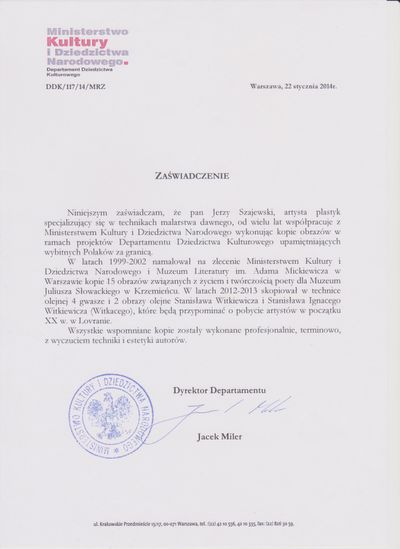
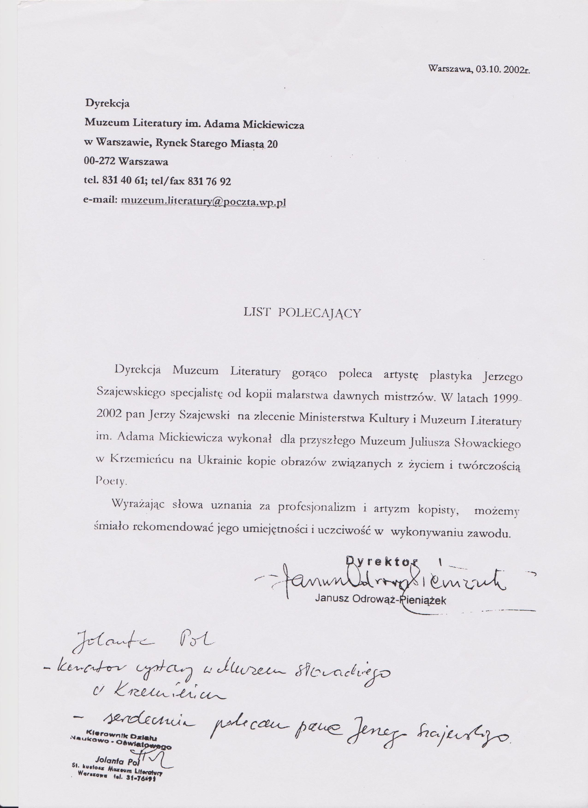

Jerzy Szajewski
Artysta Plastyk | Kopista malarstwa olejnego | Portrety ze zdjęć
O mnie
Głównie w mojej pracy od blisko 40-stu lat (od 1985 r.), zajmuję się wykonywaniem na zamówienie kopii malarstwa polskiego i światowego:
➜ Sakralnego
➜ Scen batalistycznych
➜ Scen rodzajowych
➜ Martwej natury
➜ Portretów ze zdjęcia klienta
➜ Kompozycji kwiatów w stylu holenderskim
Jestem artystą plastykiem i kopistą dzieł sztuki, członkiem Związku Polskich Artystów Plastyków Polska Sztuka Użytkowa.
Przez te 4 dekady artystycznej pracy zawodowej wykonuję kopie malarstwa dawnych mistrzów. Moje prace zdobią wnętrza polskich placówek dyplomatycznych na terenie Stanów Zjednoczonych, Francji, Hiszpanii, również Watykanu (dwa obrazy). Od lat współpracuje z Muzeum Literatury im. Adama Mickiewicza w Warszawie.
Moim cennym dokonaniem są kopie 13. portretów Juliusza Słowackiego i członków jego rodziny wykonane dla Muzeum J. Słowackiego w Krzemieńcu. Trudnię się również sztuką sakralną. Namalowałem obraz św. Wojciecha do ołtarza głównego w Kościele św. Wojciecha w Biskupicach koło Częstochowy i kopię obrazu Jezusa Miłosiernego w kościele św. Michała Archanioła oraz wiele innych obrazów sakralnych dla kaplic i kościołów.
W ostatnich latach wykonałem portrety i sceny rodzajowe do Muzeum Literatury i dla Muzeum Historycznego w Warszawie z okazji 200. rocznicy urodzin Fryderyka Chopina.
Profesor Akademii Sztuk Pięknych (Katedra Technologii Malarstwa Sztalugowego i Kopii) Jerzy Nowosielski tak wyraził swoją opinię o pracach kopisty:
„Jakość technologiczna tych kopii nie budzi żadnych zastrzeżeń, są zgodne z prawidłami warsztatu malarstwa holenderskiego, włoskiego i polskiego. Kopie wykonane przez pana Jerzego Szajewskiego cechuje duża umiejętność artystyczna oraz świadomość plastyczna."
Kontakt
(dokument PDF)
Antyspam: kratkę (hash) w adresie zamień na kropkę
(inne udostępniam na życzenie)
Warszawa, Polska
strony WWW
Umiejętności artystyczne
Doświadczenie artystyczne
Referencje


Muzeum Narodowe w Warszawie
Muzeum Literatury w Wa-we
Ministerstwo Kultury
Referencje w PDF dostępne na stronie: https://jerzyszajewski.pl.tl